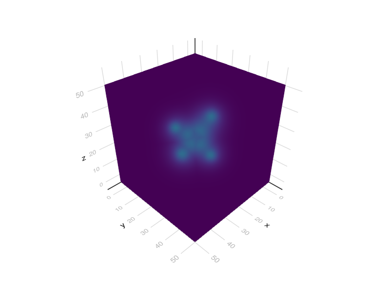
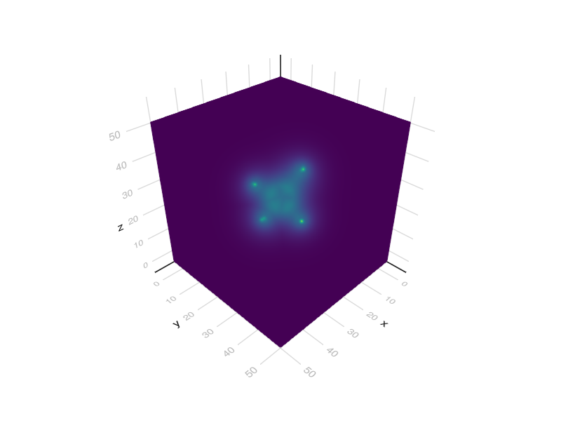

Basics: predicting electron density and force fields
"""
we predict density and forces on equilibrium and distorted geometries of CH4
"""
using FileIO
using Random
using Statistics
using UnPack
Random.seed!(1)
using GLMakie: volume
using LinearAlgebra
using EquivariantOperators
include("../src/pretrained.jl")
# whether to re-instantiate models or load them from cache file
reset = true
# reset=false
# CH4 atomic numbers
Z = [6, 1, 1, 1, 1]
# positions in Bohr (1 Angstrom = 1.88973 Bohr)
pos0 = 1.88973 * [
-0.0126981359 1.0858041578 0.0080009958
0.002150416 -0.0060313176 0.0019761204
1.0117308433 1.4637511618 0.0002765748
-0.540815069 1.4475266138 -0.8766437152
-0.5238136345 1.4379326443 0.9063972942]'
center!(pos0)
if !reset
d = "."
global predictor = load("$d\\demo2_predictor.jld2", "predictor")
else
resolution = 0.15
cell = resolution * I(3)
d = "."
# model = load("$d\\demo2.jld2", "model")
model = DEMO2
global predictor = DensityPredictor(cell, model,)
d = "."
save("$d\\demo2_predictor.jld2", "predictor", predictor)
end
# 8 x 8 x 8 Bohr box domain
domain = 8 * I(3)
origin = :center
periodic = false
mode = :verbose
# density prediction result
pos = pos0
res = predictor(Z, pos, domain; periodic, origin, mode)
@unpack ρ, grid = res
s = volume(ρ)
display(s)
# save("ch4.png",s)
# forces in Hartrees / Bohr
d = "."
if !reset
calc = load("$d\\calc.jld2", "calc",)
else
cell = 0.1I(3)
calc = ForceField(cell)
save("$d\\calc.jld2", "calc", calc)
end
forces = calc(Z, pos, ρ; origin, cell=predictor.cell)
@info "forces near equilibrium"
@info "CH length: $(norm(pos[:, 1] - pos[:, 2])) Bohr"
display(forces)
# compress geometry and recalculate forces
pos = 0.9pos0
@info "forces for compressed geometry"
@info "CH length: $(norm(pos[:, 1] - pos[:, 2])) Bohr"
ρ = predictor(Z, pos, domain; periodic, origin)
forces = calc(Z, pos, ρ; origin, cell=predictor.cell)
display(forces)
s = volume(ρ)
display(s)
# save("ch4c.png",s)
# geometry relaxation loop - needs to fix stability issues
# for i = 1:12
# ρ = predictor(Z, pos, domain; periodic, origin)
# forces .= calc(Z, pos, ρ; origin, cell=predictor.cell)
# pos .+= .2forces
# display(forces)
# @show norm(pos[:, 1] - pos[:, 2])
# endOutput

<!–  –>
–>
[ Info: forces near equilibrium
[ Info: CH length: 2.0634964549624915 Bohr
3×5 Matrix{Float64}:
0.000827607 -1.74149e-5 0.0176606 -0.00994492 -0.00902619
-0.00785024 -0.0171859 0.00718738 0.00672194 0.0062683
0.0017415 -4.89954e-5 -4.83321e-5 -0.0150512 0.0147357
<!–  –>
–>
[ Info: forces for compressed geometry
[ Info: CH length: 1.8571468094662422 Bohr
3×5 Matrix{Float64}:
0.00604092 0.00111333 0.0957033 -0.0494133 -0.0476794
-0.00396767 -0.100294 0.0354205 0.0340532 0.0338676
0.00261663 -0.000561355 -0.000580622 -0.0821397 0.0839953